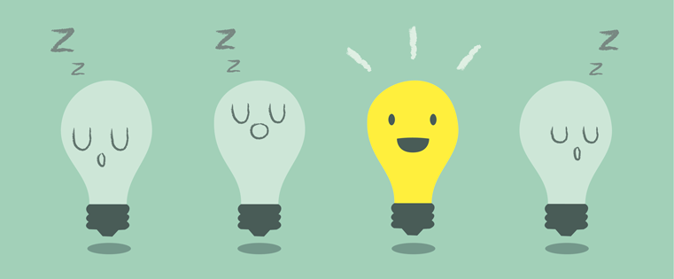
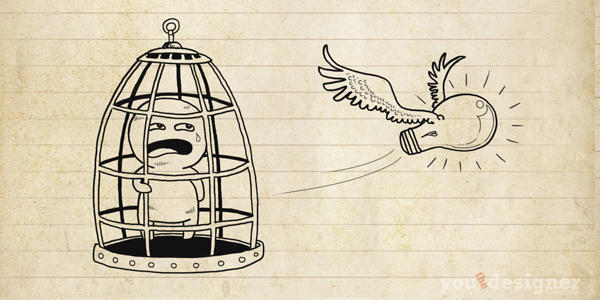

Creativity
The ability to perceive the world in new ways, to find hidden patterns, to make connections between seemingly unrelated phenomena, and to generate solutions. Creativity involves two processes: thinking, then producing.
Creativity is important because it puts us in the present. Doing something creative focuses our attention and calms us down. It also lifts our spirits when we do something we enjoy. It releases the child within us and allows us to explore what our minds are capable of producing.
Beliefs that only special, talented people are creative (and you have to be born that way) diminish our confidence in our creative abilities. Studies show that to reach excellence, it is important to have opportunities, encouragement, training, motivation, and most of all, practice.
Unlocking your creativity
Your ability to generate innovative ideas is not merely a function of the mind, but also a function of five key behaviors that optimize your brain for discovery:
- Associating: drawing connections between questions, problems, or ideas from unrelated fields
- Questioning: posing queries that challenge common wisdom
- Observing: scrutinizing the behavior of customers, suppliers, and competitors to identify new ways of doing things
- Networking: meeting people with different ideas and perspectives
- Experimenting: constructing interactive experiences and provoking unorthodox responses to see what insights emerge
How do I overcome a creative block?
Who doesn’t know the feeling: You need to come up with a great idea, solve a finicky problem or create an inspired design, but your creativity seems to have gone on vacation — without you. Here are some tips to improve your creativity!
- Try working in a coffee shop or restaurant.
- Give yourself time to daydream.
- Take a walk.
- Pretend to be someone else, somewhere else.
- Use a mind map to find new ideas by association.
- Collaborate with friends or colleagues.